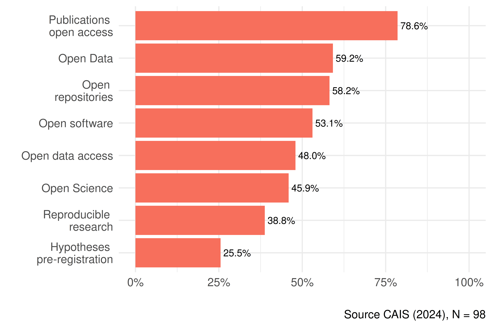
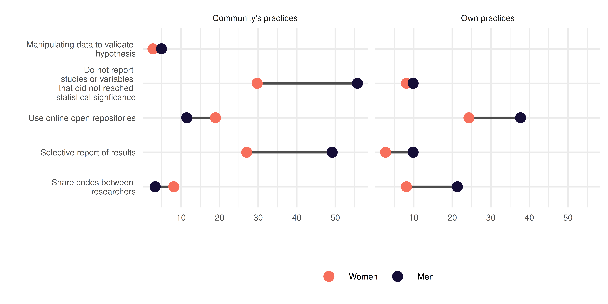
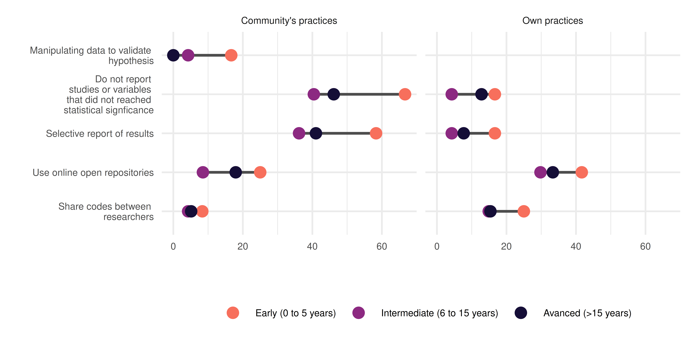
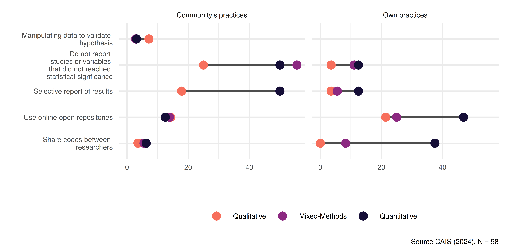
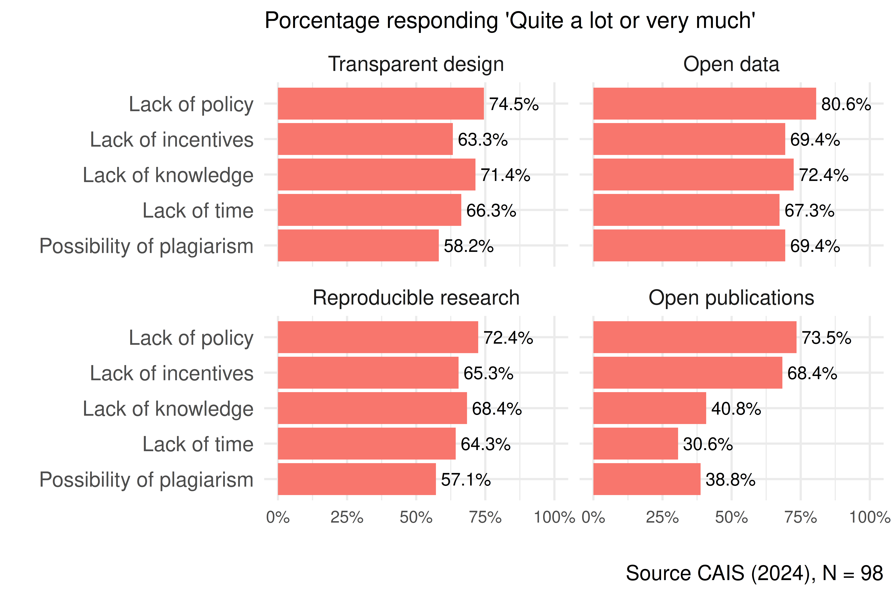
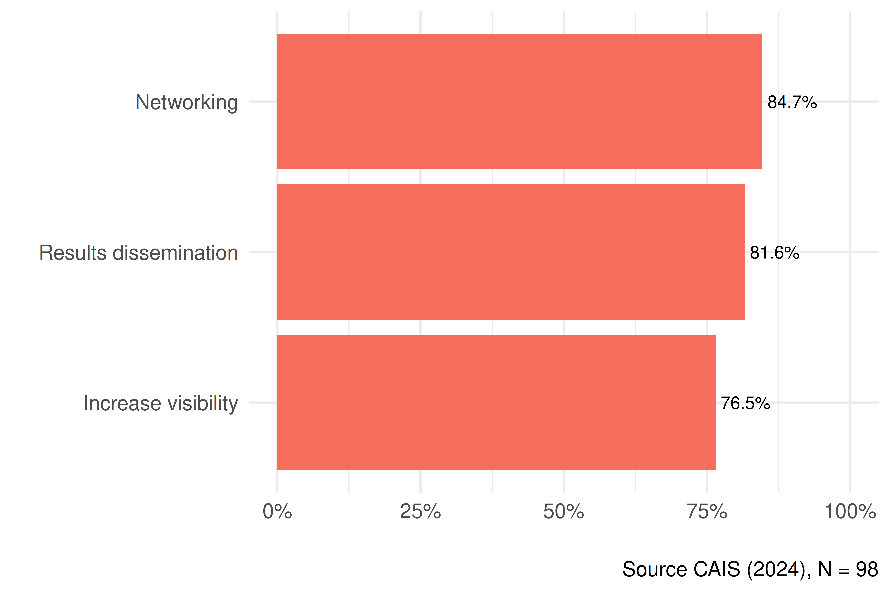
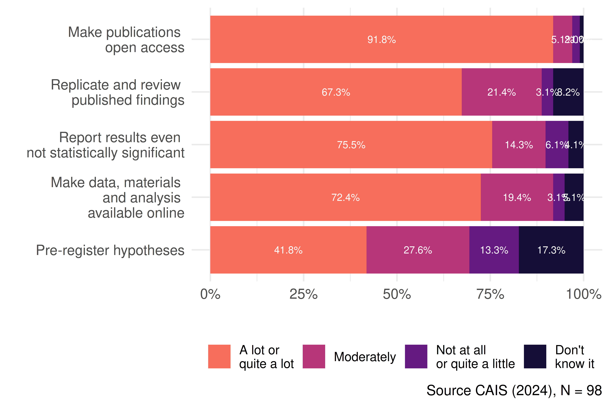
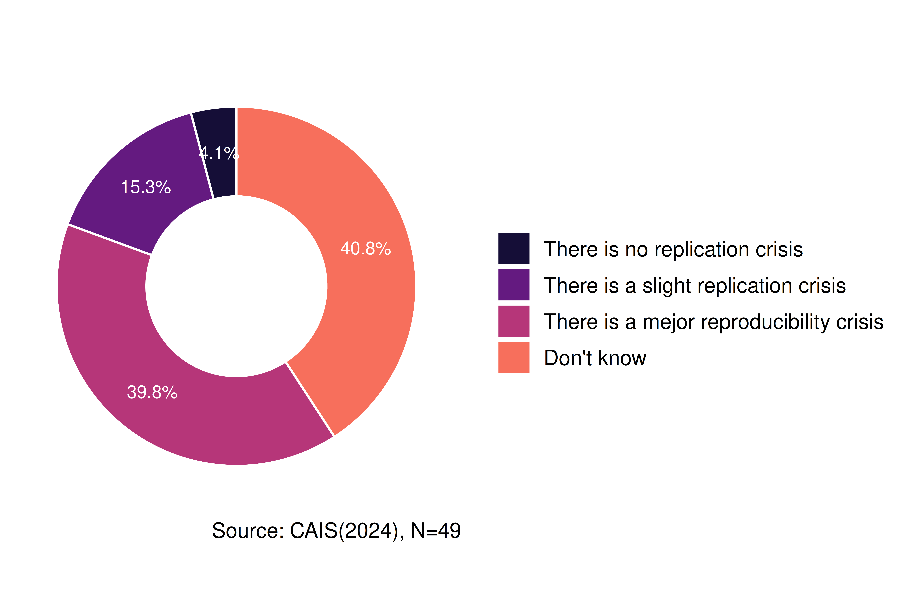
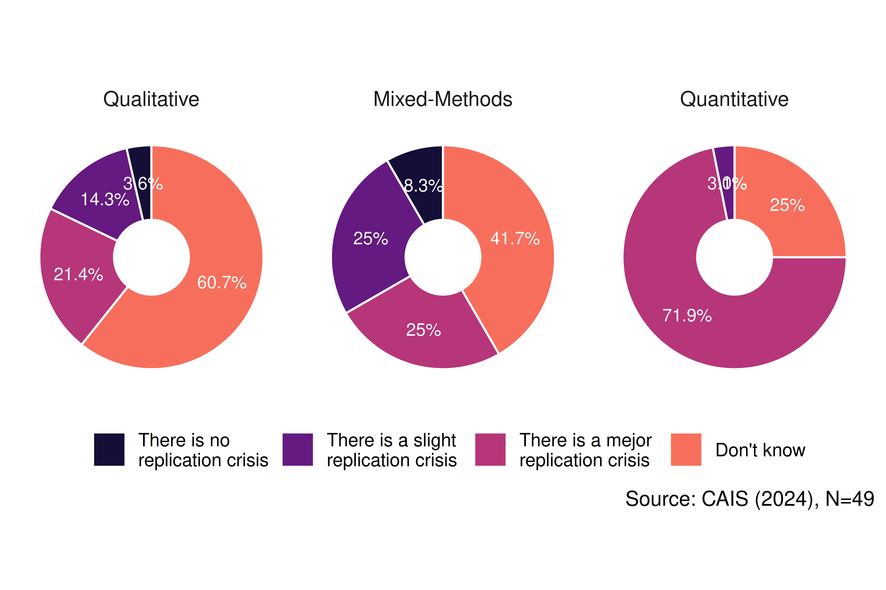
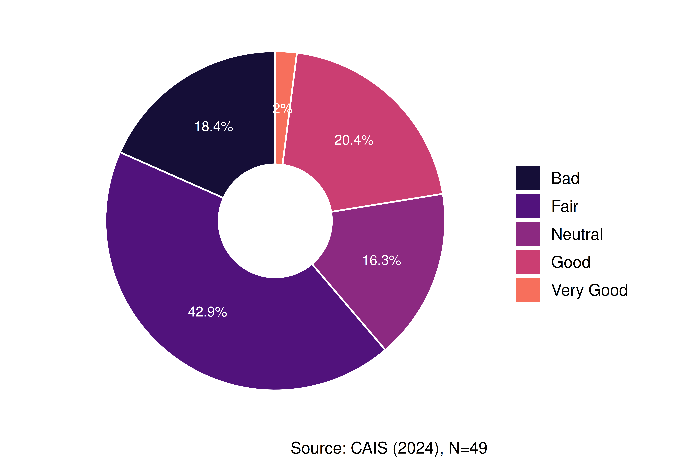

| Variable | Stats / Values | Freqs (% of Valid) | Valid | Missing |
|---|---|---|---|---|
| Sex [factor] |
1. Women 2. Men |
\37 (37.8%) \61 (62.2%) |
98 (100.0%) |
0 (0.0%) |
| Age [factor] |
1. 28-34 2. 35-49 3. 50+ |
\12 (12.2%) \55 (56.1%) \31 (31.6%) |
98 (100.0%) |
0 (0.0%) |
| Degree [factor] |
1. Master 2. PhD |
\17 (17.3%) \81 (82.7%) |
98 (100.0%) |
0 (0.0%) |
| Career stage [factor] |
1. Early (0 to 5 years) 2. Intermediate (6 to 15 yea 3. Avanced (>15 years) |
\12 (12.2%) \47 (48.0%) \39 (39.8%) |
98 (100.0%) |
0 (0.0%) |
| Research strategy [factor] |
1. Qualitative 2. Mixed-Methods 3. Quantitative |
\28 (29.2%) \36 (37.5%) \32 (33.3%) |
96 (98.0%) |
2 (2.0%) |
Quantitative Study
Methods
The results of the Open Science in Social Research (CAIS) survey were used as the basis for the quantitative study. Its questionnaire was designed by our research team based on the literature review [@baker_1500_2016; @delikoura_open_2021; @enke_user_2012; @gross_landscapes_2015; @hail_reproducibility_2020; @hodonu-wusu_malasyan_2020; @lacey_open_2020; @ljubenkovic_survey_2021; @lopezcardenas_percepciones_2021; @knudtson_survey_2019; @pardomartinez_knowledge_2018; @rodriguez_awareness_2014; @rowley_academics_2017; @sturmer_earlycareer_2017; @zhu_openaccess_2020], as well as on the findings from the qualitative study.
The questionnaire consisted of 111 questions divided into the following modules:
- Academic Career: 14 items to describe the academic career and participation in research projects of the respondents.
- General Aspects of Open Science: 20 items about the level of knowledge of the participants about open science and the tools it provides.
- Research Practices, Openness and Ethics in Social Sciences: 14 items assessing the frequency with which the researchers perform certain practices, both positive and negative, related to the research process, as well as the perception of the frequency with which other researchers perform them.
- Open Data: 17 items analyzing researchers’ perceptions of the openness of data.
- Reproducible Research: 15 items exploring researchers’ perceptions and practices regarding the openness of analysis in their research.
- Open access to publication: 16 items exploring researchers’ perception and practices regarding open access to their research results.
- ANID Open Access Policy: 10 items exploring researchers’ knowledge of ANID’s Open Access Policy for publicly funded scientific information and research data.
- Sociodemographic Characterization: 5 item on the socio-demographic characteristic of the participants.
We used FormR for the implementation of the questionnaire. FormR is an open source software that allows the design of complex questionnaires with a high degree of customization [@arslan_chain_2025; @arslan_formr_2020] . Since it is integrated with RStudio (R + RMarkdown), it facilitates collaborative work regardless of the length of the questionnaire. The platform allows the questionnaire to be self-administered, either by personal computers or by smartphones.
To construct the sample, mass mailings were sent to researchers who had received state research funding, to faculties and departments of various social science disciplines, and to research centers and associative research projects. In addition, the survey was distributed through social media and at academic events. In the end, 98 complete responses were received. The description of the sample is presented in Table 1.
We conducted a descriptive uni- and bivariate analysis of the key indicators of the questionnaire. We aimed to describe the respondents’ knowledge, practices and attitudes about open science and the constructs described above. These variable were crossed by age group, research focus, academic career stage, academic degree, and gender to detect possible differences between groups.
Results
Knowledge
As shown in Figure 1, the concept most recognized by the respondents is open access to publications (79%), in line with what was described in the qualitative study. Ideas such as open data (59%), the use of free software for analysis (53%), and the concept of open science itself (46%) have medium levels of knowledge among respondents. At the other extreme, only 25% of respondents say they are familiar with the pre-registration of hypotheses.

In general, knowledge levels seem to be higher among young researchers and with a predominantly quantitative focus, as shown in the Figure 2. Respondents between 28 and 34 years of age, thus, show higher levels of knowledge about free software, and the concepts of reproducible research and open science (Figure 2 (a)). However, researchers between 35 and 49 years of age show higher levels of knowledge of hypotheses preregistration and open access to data. Quantitative researchers, meanwhile, show higher levels of knowledge of all concepts except open access to publications (Figure 2 (b)).


Similarly, ANID’s Open Access to Scientific Information and Research Data Policy shows a medium to low level of awareness. Specifically, only half of the respondents have heard of ANID’s policy. On the other hand, only 26% are aware of ANID’s data management plan for the open access policy.
Practices
a. Own practices and Community’s practices
In general, the frequency of practices related to open science is low, as seen in Figure 3. 32% of respondents always or almost always use online repositories to upload information related to their research, and 16% report sharing code among researchers (Figure 3 (b)). These types of practices are more common among male researchers, those whose primary research strategy is quantitative, and those who are in an early stage in their academic careers.


Interestingly, researchers generally report better practices for themselves than for the community. For example, only 14% believe that the community always or almost always uses online repositories to upload information related to their research, and 5% believe that researchers share code with that frequency (Figure 3 (a)).
This gap also exits in the case of malpractice. 9% of the respondents say they almost always or always fail to report studies or variables that do not reach statistical significance, while 45% believe this practices are that common in the community. On the other hand, while 7% say they selectively report results, 40% believe it is always or almost always done in the community. Finally, while no one admits to having manipulated data to validate a hypothesis, 4% say this always or almost always happens in the community.
It is noteworthy that when the analysis is broken down into different groups, certain trends are repeated. Male, quantitative-oriented, early-career researchers are at the same time those who declare the highest frequency of own practices, both negative and positive, as well as those perceive the highest number of negative practices in the community. These differences can be seen in detail in the Figure 4



b. Open Science Barriers
There is a high perception of barriers to the development of Open Science in all its dimensions. Lack of policy is perceived as the main barrier in all dimensions, as can be seen in the Figure 5. Lacks of knowledge also appears as a major barrier especially for transparent design, open data and reproducible research. Finally, lack of incentives is recognized as another aspect that hinders data openness.

Figure 6 depicts the incentives that researchers might have to open their data, whereby the most valuable are networking, the dissemination of publicly funded data to the community, and the increase of one’s work visibility.

Figure 7 shows that, while the dissemination of results is valued transversally, there are groups where the valuation of extrinsic motivations has a greater preponderance. In particular, networking and increasing one’s own visibility are incentives more highly valued by women (Figure 7 (a)) and researchers between 35 and 49 years of age (Figure 7 (b))


Attitudes
a. Attitudes towards Open Science Measures
In general, the possibility of adopting Open Science measures in the social sciences is assessed positively, as can be see in Figure 8. Open access (92%), replication of results (67%), reporting of non-statistically significant results (76%), and online availability of data and analysis materials (72%) all show a high level of acceptance among respondents. The only exception is the pre-registration of hypothesis, which received a positive evaluation of only 42%. This is explained by a higher level of unfamiliarity (17% say they are not aware of the measure), in addition to the reluctance already observed in the qualitative study.

With the exception of open access to publications, which is valued transversally by all groups, these measures are more strongly supported by females researchers and by researchers with a quantitative approach, as can be seen in the Figure 9


b. Attitudes about the Replication Crisis
As shown in the Figure 10, 39% of respondents believe there is a major replication crisis, while 40% do not know if there is one. Concern is greater among quantitative researchers, as seen in Figure 11, with 70% believing that the crisis is important. While there is no denial of the crisis among qualitative researchers, 60% do not know if there is a crisis or not.


On the other hand, 59% believe that 30% or less of social science research is reproducible, while 83% believe that less than half of social science research is reproducible, as shown in Table 2
Reproducible
| Researches | Frequency | Acum (%) |
|---|---|---|
| 0 | 1 | 1.02 |
| 10 | 16 | 17.35 |
| 20 | 13 | 30.61 |
| 30 | 23 | 54.08 |
| 40 | 3 | 57.14 |
| 50 | 25 | 82.65 |
| 60 | 4 | 86.73 |
| 70 | 4 | 90.82 |
| 80 | 4 | 94.90 |
| 90 | 5 | 100.00 |
This is consistent with the 40% of respondents having attempted to reproduce the results of other researchers (Figure 12 (a)). Of this percentage, only 20% of the attempts were complete reproductions, while 69% were only partial (Figure 12 (b))


c. Attidues about ANID’s Open Science policies
In the first instance, ANID’s Open Science Policy is well received by the respondents. For example, 90% agree or strongly agree that ANID should continue to develop its Open Science Policy, as show in Figure 13 (b). Similarly, 84% consider the implementation of Open Access policies to be quite or very necessary, as shown in Figure 13 (a)


However, there are other practices that are less well received. Thus, both mandatory pre-registration, as shown in Figure 14 (a), and reproducibility (Figure 14 (b)), are supported only by half of the respondents.


Finally, the dissemination of ANID’s Open Access policy is negatively evaluated by the majority of respondents. Only 24% consider it to be good or very good, as seen in Figure 15
